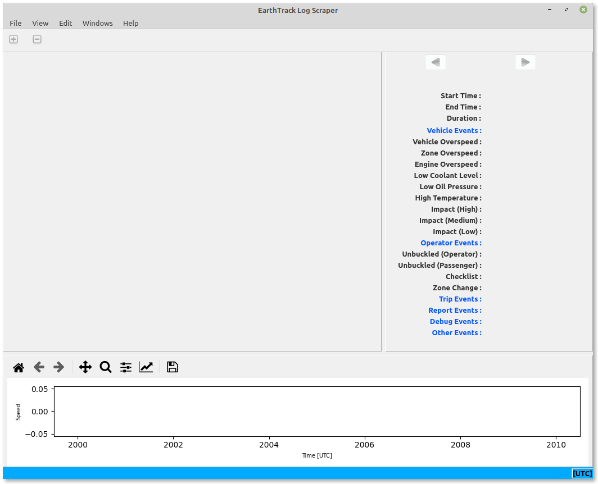

The application consists of one main window divided into three panes. The left pane is the Trip Data pane and shows the parsed contents of all trips in the log file, the right pane is the Trip Summary pane and shows summary information for the currently selected trip, and the bottom pane shows a speed plot for the currently selected trip.
Note that the application supports log files from Smartrack devices as well as those from Gen 5 Zoners, noting that in the case of Zoners there is no concept of trips so power cycles are used instead. The same main window is used for all types of log files.
There is a blue status bar at the bottom of the application window that displays temporary messages, as well as showing the current epoch trip times are displayed in, and the controller ID read from the log file.